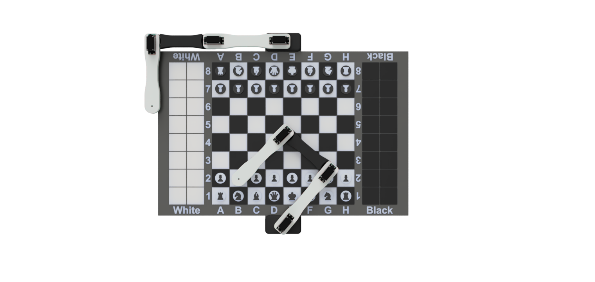
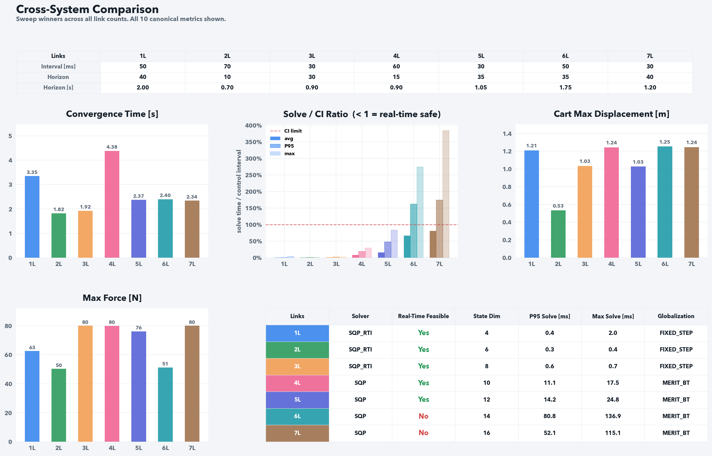

02 / Controls · Simulation
3D satellite control
Thrusters, reaction wheels, six-degree-of-freedom simulation, and mission planning.
Explore project ↗

03 / Robotics · In development
Dual-arm chess robot
Two planar arms. One chessboard. Collision-aware paths and a live digital twin.
Explore project ↗

04 / Controls · Simulation
N-link inverted pendulum
Exploring nonlinear control, swing-up, and the limits of real-time optimization.
Explore project ↗
05 / Lava-rock processing
Crushing and conveying machinery developed through CAD, structural analysis, and a scaled prototype.
Explore project ↗
06 / Gufuhellir Fontana
CAD geometry, ventilation configurations, and thermal simulation for a geothermal steam bath.
Explore project ↗
07 / Robotic Arm
Mechanical studies and control prototypes spanning the original arm, V1, 2.0, Arduino, and ESP32.
Explore project ↗
08 / Optimized Robotic Arm
A four-joint arm simulator that searches for reachable poses within static torque limits.
Explore project ↗
09 / Robotic Hand
Three design iterations with finger assemblies, forearm components, and printable models.
Explore project ↗
10 / Grain / CMMS
Facility-management software connecting work orders, shared assets, departments, and permissions.
Explore project ↗
11 / iOS Organizer
An agent-guided workflow to inventory apps, preview layouts, and organize an iPhone Home Screen.
Explore project ↗
12 / Mac Performance Monitor
Pulse for Mac: a native performance monitor with system metrics, process groups, and session history.
Explore project ↗
13 / Photomerge
A desktop panorama workflow combining local image stitching, control-point review, and export.
Explore project ↗